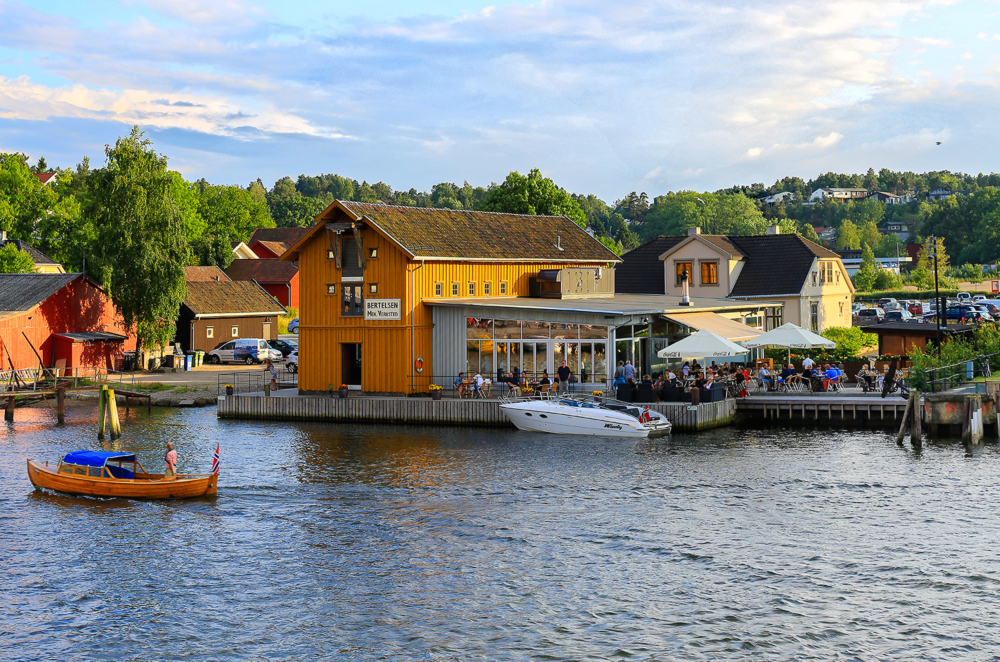

Slippen
Restauranten har en flott og idyllisk beliggenhet med utsikt utover vannet. Her kan du sitte og nyte et fantastisk måltid og skue Fredrikstads travle bryggepromenade.
Restauranten har en flott og idyllisk beliggenhet med utsikt utover vannet. Her kan du sitte og nyte et fantastisk måltid og skue Fredrikstads travle bryggepromenade.
Majorens Kro, Wine & Dine Stue og møterom Framheim er sentralt plassert i Gamle Fredrikstad, festningsbyen som ble grunnlagt i år 1567 av kong Frederik II. Gamlebyen regnes i dag for å være Nord-Europas best bevarte festningsby, og er en av Norges mest populære turist-attraksjoner.
Fabel er et spisested man kan dra til for å møte venner, kose seg med familien eller ta med forretningsforbindelser for å hygge seg med internasjonal og moderne mat i urbane omgivelser.